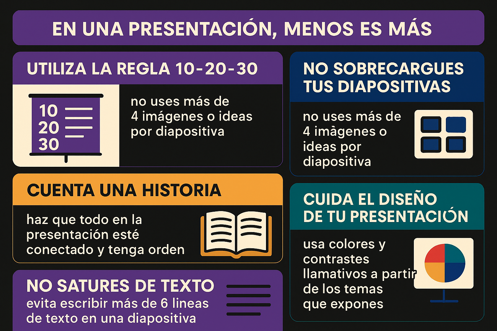

Uso de PowerPoint
Introducción
Podrás optimizar el uso de la aplicación Microsoft PowerPoint para la
generación de presentaciones más sofisticadas y fáciles de hacer, empleando además las
posibilidades del trabajo colaborativo y distribución de la información.
El uso de Microsoft PowerPoint para la generación de presentaciones profesionales
En este programa de formación aprenderás a generar diapositivas y enriquecerlas con elementos
visuales, diseños y animaciones de la aplicación Microsoft PowerPoint.
TIPS para realizar presentaciones

Actividades
Taller práctico 1- Presentaciones simples y entorno de trabajo en Microsoft PowerPoint.
Trabajando para una empresa ambiental construya una presentación en PowerPoint mínimo 10 diapositivas en la que aplique los siguientes procesos:
● Insertar temas y fondos.
● Añadir textos de diferentes formas (fuentes, atributos y formatos de párrafo).
● Generar dibujos y formas (libres, lápices y estilos de formas).
● Organizar objetos.
● Utilizar iconos, imágenes y fotografías.
Taller práctico 2: Venta de elementos deportivos
En una idea de negocio es fundamental el producto y cómo venderlo, esto depende en gran manera de su presentación, la cual refleja la síntesis de toda una investigación acerca del producto. Para que este producto se vea atractivo y de calidad requiere de mucho trabajo, ya que en últimas es el reflejo del potencial de una empresa o la idea de un negocio. De acuerdo a lo anterior discuta sobre las siguientes preguntas:
1. ¿Qué tipo de información considera más importante tener en cuenta a la hora de realizar la presentación de un producto?
2. ¿Qué información mostraría en las tres primeras diapositivas para impactar a un cliente?
Criterios de evaluación:
| Criterio | Excelente (5 pts) | Bueno (4 pts) | Aceptable (3 pts) | Deficiente (1-2 pts) |
|---|---|---|---|---|
| Número y coherencia de diapositivas | 10 o más diapositivas completas, coherentes y bien estructuradas. | 10 diapositivas completas con pequeños problemas de coherencia. | Menos de 10 diapositivas o con poca coherencia. | Menos de 7 diapositivas o desorganizadas. |
| Aplicación de temas y fondos | Uso adecuado de temas, fondos y diseños consistentes. | Aplicación de temas y fondos con pequeñas inconsistencias. | Fondos aplicados sin coherencia visual. | No aplica temas ni fondos. |
| Uso de textos | Variedad de fuentes, atributos y formatos aplicados correctamente. | Uso de fuentes y atributos con algunas inconsistencias. | Poca variedad en formatos de texto. | Textos sin formato ni diferenciación. |
| Dibujos y formas | Inserta y personaliza varias formas y dibujos con estilo propio. | Inserta formas con personalización básica. | Inserta pocas formas y sin personalización. | No inserta dibujos ni formas. |
| Organización de objetos | Organiza todos los objetos correctamente (alineación, orden, agrupación). | Organiza la mayoría de objetos con algunos errores menores. | Organización básica con errores frecuentes. | No organiza objetos en la presentación. |
| Recursos gráficos | Inserta iconos, imágenes y fotografías relevantes y de calidad. | Inserta algunos recursos gráficos relevantes. | Inserta pocos recursos gráficos o de baja calidad. | No utiliza recursos gráficos. |